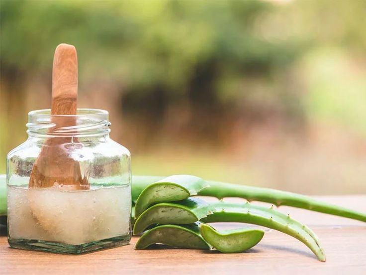
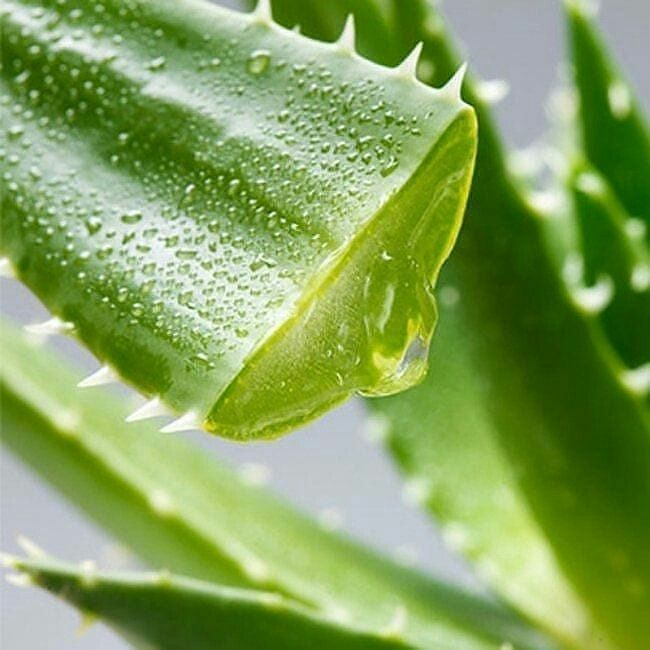

Sobre nosotros
Bio-Vera se especializa en la elaboración de un shampoo innovador
Utilizando penca de sábila como ingrediente principal. Nuestra empresa se dedica a desarrollar productos due aprovechan las excepcionales propiedades de la sábila,conocidas por sus beneficios hidratantes,regeneradores y nutritivos para el cabello.
Objetivo
Nuestro objetivo principal es crear nuevas oportunidades de empleo, es crear nuevas oportunidades de empleo en la comunidad local,generando puestos de trabajo a lo largo de todas las fases del proceso, desde la recolección y procesamiento de las pencas de sábila hasta la fabricación y distribución del shampoo.

